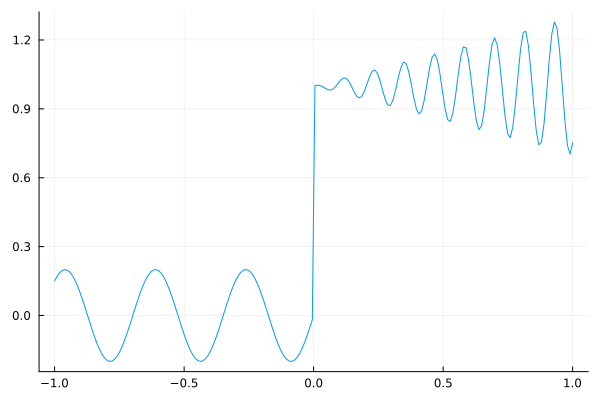
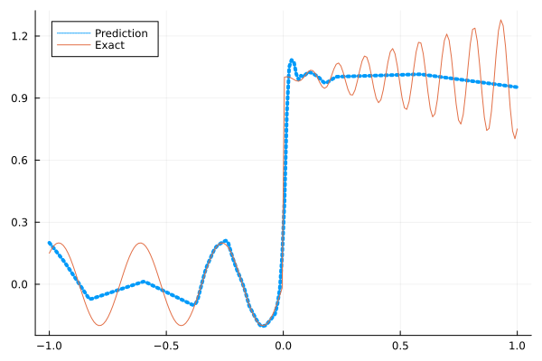
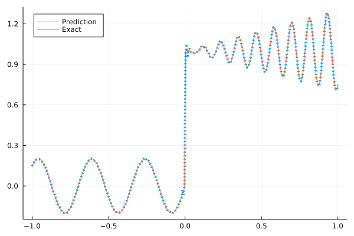
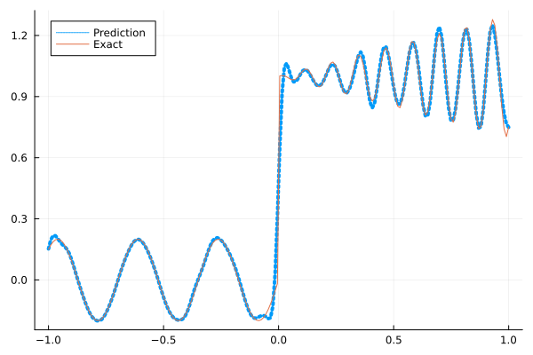
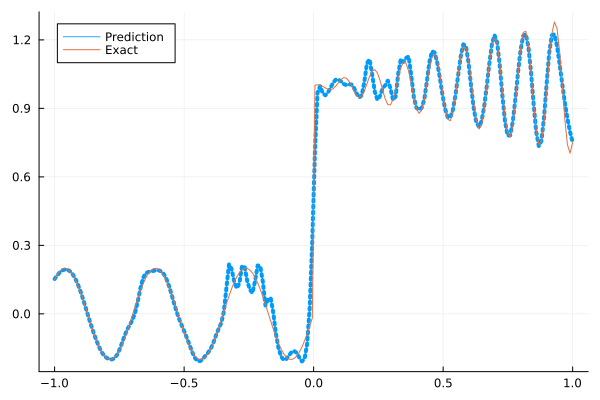
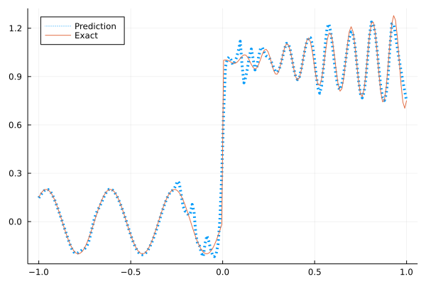

Fitting a nonlinear discontinuous function
This example is taken from here. However, we do not use adaptive activation functions. Instead, we show that using suitable non-parametric activation functions immediately performs better.
Consider the following discontinuous function with discontinuity at $x=0$:
\[u(x)= \begin{cases}0.2 \sin (18 x) & \text { if } x \leq 0 \\ 1+0.3 x \cos (54 x) & \text { otherwise }\end{cases}\]
The domain is $[-1,1]$. The number of training points used is 50.
Import pacakges
using Lux, Sophon
using NNlib, Optimisers, Plots, Random, Statistics, ZygoteDataset
function u(x)
if x <= 0
return 0.2 * sin(18 * x)
else
return 1 + 0.3 * x * cos(54 * x)
end
end
function generate_data(n=50)
x = reshape(collect(range(-1.0f0, 1.0f0, n)), (1, n))
y = u.(x)
return (x, y)
endgenerate_data (generic function with 2 methods)Let's visualize the data.
x_train, y_train = generate_data(50)
x_test, y_test = generate_data(200)
Plots.plot(vec(x_test), vec(y_test),label=false)
Naive Neural Nets
First we demonstrate show naive fully connected neural nets could be really bad at fitting this function.
model = FullyConnected((1,50,50,50,50,1), relu)Chain(
layer_1 = Dense(1 => 50, relu), # 100 parameters
layer_2 = Dense(50 => 50, relu), # 2_550 parameters
layer_3 = Dense(50 => 50, relu), # 2_550 parameters
layer_4 = Dense(50 => 50, relu), # 2_550 parameters
layer_5 = Dense(50 => 1), # 51 parameters
) # Total: 7_801 parameters,
# plus 0 states, summarysize 80 bytes.Train the model
function train(model, x, y)
ps, st = Lux.setup(Random.default_rng(), model)
opt = Adam()
st_opt = Optimisers.setup(opt,ps)
function loss(model, ps, st, x, y)
y_pred, _ = model(x, ps, st)
mes = mean(abs2, y_pred .- y)
return mes
end
for i in 1:2000
gs = gradient(p->loss(model,p,st,x,y), ps)[1]
st_opt, ps = Optimisers.update(st_opt, ps, gs)
if i % 100 == 1 || i == 2000
println("Epoch $i || ", loss(model,ps,st,x,y))
end
end
return ps, st
endtrain (generic function with 1 method)Plot the result
@time ps, st = train(model, x_train, y_train)
y_pred = model(x_test,ps,st)[1]
Plots.plot(vec(x_test), vec(y_pred),label="Prediction",line = (:dot, 4))
Plots.plot!(vec(x_test), vec(y_test),label="Exact",legend=:topleft)Epoch 1 || 0.7240661878979563
Epoch 101 || 0.016226237442010828
Epoch 201 || 0.013878699145704857
Epoch 301 || 0.013141469116517599
Epoch 401 || 0.012807785336746251
Epoch 501 || 0.012425170363782883
Epoch 601 || 0.011863066389016299
Epoch 701 || 0.011073790158504565
Epoch 801 || 0.009605400372979161
Epoch 901 || 0.008781697759885911
Epoch 1001 || 0.007990483789245129
Epoch 1101 || 0.0077626117021534855
Epoch 1201 || 0.007785188962275584
Epoch 1301 || 0.007699278162018128
Epoch 1401 || 0.007680701760944317
Epoch 1501 || 0.007692776838610683
Epoch 1601 || 0.007690413425293878
Epoch 1701 || 0.0076765900075602845
Epoch 1801 || 0.007638878706043528
Epoch 1901 || 0.007658297985299942
Epoch 2000 || 0.007615164369439287
14.214983 seconds (15.13 M allocations: 1.446 GiB, 3.11% gc time, 90.96% compilation time)
Siren
We use four hidden layers with 50 neurons in each.
model = Siren(1,50,50,50,50,1; omega = 30f0)Chain(
layer_1 = Dense(1 => 50, sin), # 100 parameters
layer_2 = Dense(50 => 50, sin), # 2_550 parameters
layer_3 = Dense(50 => 50, sin), # 2_550 parameters
layer_4 = Dense(50 => 50, sin), # 2_550 parameters
layer_5 = Dense(50 => 1), # 51 parameters
) # Total: 7_801 parameters,
# plus 0 states, summarysize 88 bytes.@time ps, st = train(model, x_train, y_train)
y_pred = model(x_test,ps,st)[1]
Plots.plot(vec(x_test), vec(y_pred),label="Prediction",line = (:dot, 4))
Plots.plot!(vec(x_test), vec(y_test),label="Exact",legend=:topleft)Epoch 1 || 0.7315134403291236
Epoch 101 || 0.0009070274011109121
Epoch 201 || 5.6927671697211424e-6
Epoch 301 || 2.3578937442594043e-8
Epoch 401 || 4.3613656291371155e-11
Epoch 501 || 3.0531121089477325e-13
Epoch 601 || 6.21538085102405e-14
Epoch 701 || 6.894793277807403e-14
Epoch 801 || 8.796417410160736e-14
Epoch 901 || 4.437097868806148e-14
Epoch 1001 || 3.8709526337649466e-14
Epoch 1101 || 4.282424630989121e-14
Epoch 1201 || 6.236706479358636e-14
Epoch 1301 || 5.4301929177392754e-14
Epoch 1401 || 5.143864032941016e-14
Epoch 1501 || 6.272320347917183e-14
Epoch 1601 || 1.0203907903498488e-13
Epoch 1701 || 5.571249752036072e-14
Epoch 1801 || 5.302006794037228e-14
Epoch 1901 || 1.343460590620795e-13
Epoch 2000 || 7.716914934372178e-14
5.538794 seconds (5.59 M allocations: 1.077 GiB, 5.53% gc time, 75.65% compilation time)
As we can see the model overfits the data, and the high frequencies cannot be optimized away. We need to tunning the hyperparameter omega
model = Siren(1,50,50,50,50,1; omega = 10f0)Chain(
layer_1 = Dense(1 => 50, sin), # 100 parameters
layer_2 = Dense(50 => 50, sin), # 2_550 parameters
layer_3 = Dense(50 => 50, sin), # 2_550 parameters
layer_4 = Dense(50 => 50, sin), # 2_550 parameters
layer_5 = Dense(50 => 1), # 51 parameters
) # Total: 7_801 parameters,
# plus 0 states, summarysize 88 bytes.@time ps, st = train(model, x_train, y_train)
y_pred = model(x_test,ps,st)[1]
Plots.plot(vec(x_test), vec(y_pred),label="Prediction",line = (:dot, 4))
Plots.plot!(vec(x_test), vec(y_test),label="Exact",legend=:topleft)Epoch 1 || 0.439055548490482
Epoch 101 || 0.0077444236220079185
Epoch 201 || 0.005370626193252994
Epoch 301 || 0.003516484819261265
Epoch 401 || 0.0022192671153944267
Epoch 501 || 0.001374009200032474
Epoch 601 || 0.000933387862258486
Epoch 701 || 0.0005669055190120076
Epoch 801 || 0.00029337179441233616
Epoch 901 || 0.00016337327193836462
Epoch 1001 || 0.00010583106242384044
Epoch 1101 || 7.654928696910011e-5
Epoch 1201 || 5.97371547147359e-5
Epoch 1301 || 4.86523338059524e-5
Epoch 1401 || 4.04029920854982e-5
Epoch 1501 || 3.389505166508767e-5
Epoch 1601 || 2.8736598064091307e-5
Epoch 1701 || 0.0009302566879859003
Epoch 1801 || 2.1173544441169796e-5
Epoch 1901 || 1.849653203401541e-5
Epoch 2000 || 1.7718067235679737e-5
1.310433 seconds (855.10 k allocations: 786.339 MiB, 11.47% gc time)
Gaussian activation function
We can also try using a fully connected net with the gaussian activation function.
model = FullyConnected((1,50,50,50,50,1), gaussian)Chain(
layer_1 = Dense(1 => 50, gaussian), # 100 parameters
layer_2 = Dense(50 => 50, gaussian), # 2_550 parameters
layer_3 = Dense(50 => 50, gaussian), # 2_550 parameters
layer_4 = Dense(50 => 50, gaussian), # 2_550 parameters
layer_5 = Dense(50 => 1), # 51 parameters
) # Total: 7_801 parameters,
# plus 0 states, summarysize 80 bytes.@time ps, st = train(model, x_train, y_train)
y_pred = model(x_test,ps,st)[1]
Plots.plot(vec(x_test), vec(y_pred),label="Prediction",line = (:dot, 4))
Plots.plot!(vec(x_test), vec(y_test),label="Exact",legend=:topleft)Epoch 1 || 0.4001470630299447
Epoch 101 || 0.004763775512337283
Epoch 201 || 0.00322286438217099
Epoch 301 || 0.0008217767210149299
Epoch 401 || 4.714040725852438e-5
Epoch 501 || 2.484296641673235e-6
Epoch 601 || 1.7197145532105906e-6
Epoch 701 || 3.565161579872548e-7
Epoch 801 || 2.8381736516341694e-7
Epoch 901 || 4.119792322887029e-8
Epoch 1001 || 2.3419971888394174e-6
Epoch 1101 || 2.336701566269228e-8
Epoch 1201 || 2.2689119625275537e-6
Epoch 1301 || 1.820314649364752e-8
Epoch 1401 || 3.756078413939846e-9
Epoch 1501 || 1.651937812342531e-5
Epoch 1601 || 1.062626798223143e-8
Epoch 1701 || 1.6968427455695586e-9
Epoch 1801 || 2.7926065776249957e-10
Epoch 1901 || 4.654188324909561e-11
Epoch 2000 || 3.1848003163292034e-6
5.740737 seconds (6.40 M allocations: 1.118 GiB, 4.28% gc time, 75.00% compilation time)
Quadratic activation function
quadratic is much cheaper to compute compared to the Gaussain activation function.
model = FullyConnected((1,50,50,50,50,1), quadratic)Chain(
layer_1 = Dense(1 => 50, quadratic), # 100 parameters
layer_2 = Dense(50 => 50, quadratic), # 2_550 parameters
layer_3 = Dense(50 => 50, quadratic), # 2_550 parameters
layer_4 = Dense(50 => 50, quadratic), # 2_550 parameters
layer_5 = Dense(50 => 1), # 51 parameters
) # Total: 7_801 parameters,
# plus 0 states, summarysize 80 bytes.@time ps, st = train(model, x_train, y_train)
y_pred = model(x_test,ps,st)[1]
Plots.plot(vec(x_test), vec(y_pred),label="Prediction",line = (:dot, 4))
Plots.plot!(vec(x_test), vec(y_test),label="Exact",legend=:topleft)Epoch 1 || 0.3485436325750016
Epoch 101 || 0.006329704918581999
Epoch 201 || 0.005557994340150339
Epoch 301 || 0.004876744884153161
Epoch 401 || 0.004136989755044995
Epoch 501 || 0.0027953584896293236
Epoch 601 || 0.0012712385175047054
Epoch 701 || 0.0002541760458932073
Epoch 801 || 1.2908687036790271e-5
Epoch 901 || 2.2480931828537382e-6
Epoch 1001 || 1.1761337726819697e-7
Epoch 1101 || 7.695508044843933e-7
Epoch 1201 || 4.01920426984536e-6
Epoch 1301 || 1.6374078188049176e-8
Epoch 1401 || 7.229260154683773e-8
Epoch 1501 || 2.6428666706263536e-5
Epoch 1601 || 5.866698852067996e-6
Epoch 1701 || 2.7314607250208305e-5
Epoch 1801 || 4.6150754819665385e-7
Epoch 1901 || 1.3618362186120809e-5
Epoch 2000 || 1.212653521291196e-5
4.936293 seconds (5.51 M allocations: 1.072 GiB, 4.90% gc time, 80.03% compilation time)
Conclusion
"Neural networks suppresse high frequency components" is a misinterpretation of the spectral bias. The accurate way of putting it is that the lower frequencies in the error are optimized first in the optimization process. This can be seen in Siren's example of overfitting data, where you do not have implicit regularization. The high frequency in the network will never go away because it has fitted the data perfectly.
Mainstream attributes the phenomenon that neural networks "suppress" high frequencies to gradient descent. This is not the whole picture. Initialization also plays an important role. Siren mitigats this problem by initializing larger weights in the first layer, while activation functions such as gassian have large enough gradients and sufficiently large support of the second derivative with proper hyperparameters. Please refer to Vincent Sitzmann, Julien Martel, Alexander Bergman, David Lindell, Gordon Wetzstein (2020), Sameera Ramasinghe, Simon Lucey (2021) and Sameera Ramasinghe, Lachlan MacDonald, Simon Lucey (2022) if you want to dive deeper into this.